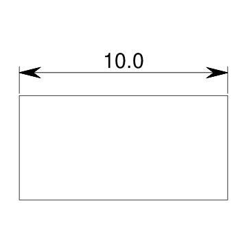

| Object: BASE-VIEW (The :GEOM-BASE Package) |
| Mixins: BASE-OBJECT |
| Input Slots (optional) | |
| ANNOTATION-OBJECTS list of gdl objects | |
These objects will be displayed in each view by default, with no scaling or transform (i.e. they are in Drawing space. | |
| BORDER-BOX? boolean | |
Determines whether a rectangular border box is drawn around the view, with the view's length and width. Defaults to nil. | |
| BOUNDING-BOX [from BASE-OBJECT] list of two 3d points | |
The left front bottom and right rear top corners, in global coordinates, of the rectangular volume bounding the tree of geometric objects rooted at this object. | |
| CENTER 3d-point | |
Center of the view box. Specify this or corner, not both.
| |
| CORNER 3d-point | |
Top left (i.e. rear left from top view) of the view box. Specify this or center, not both. | |
| FRONT-MARGIN number in drawing scale (e | |
g. points). Amount of margin on front and rear of page when view-scale is to be computed automatically. Defaults to 25. | |
| HIDDEN? [from VANILLA-MIXIN*] boolean | |
Indicates whether the object should effectively be a hidden-object even if specified in :objects. Default is nil. | |
| IMAGE-FILE [from BASE-OBJECT] pathname or string | |
Points to a pre-existing image file to be displayed instead of actual geometry for this object. Defaults to nil | |
| IMMUNE-OBJECTS list of gdl objects | |
These objects are immune from view scaling and transform computations and so can freely refer to the view-scale, view-center, and other view information for self-scaling views. Defaults to NIL. | |
| LEFT-MARGIN number in drawing scale (e | |
g. points). Amount of margin on left and right of page when view-scale is to be computed automatically. Defaults to 25. | |
| LOCAL-BOX [from BASE-OBJECT] list of two 3d points | |
The left front bottom and right rear top corners, in global coordinates, of the rectangular volume bounding this geometric object. | |
| OBJECT-ROOTS list of gdl objects | |
The leaves from each of these objects will be displayed in each view by default. | |
| OBJECTS list of gdl objects | |
These objects will be displayed in each view by default. | |
| OBLIQUENESS [from BASE-OBJECT] 3x3 orthonormal matrix of double-float numbers | |
This is synonymous with the orientation. | |
| ONCLICK-FUNCTION [from BASE-OBJECT] lambda function of zero arguments, or nil | |
If non-nil, this function gets invoked when the user clicks the object in graphics front-ends which support this functionality, e.g. SVG/Raphael and X3DOM. | |
| PROJECTION-VECTOR 3d unitized vector | |
Direction of camera pointing to model (the object-roots and/or the objects) to create this view. The view is automatically ``twisted''about this vector to result in ``up'' being as close as possible to the Z vector, unless this vector is parallel to the Z vector in which case ``up'' is taken to be the Y (rear) vector. This vector is normally taken from the *standard-views* built-in GDL parameter. Defaults to (getf *standard-views* :top), which is the vector [0, 0, 1]. | |
| ROOT [from VANILLA-MIXIN*] gdl instance | |
The root-level node in this object's ``tree'' (instance hierarchy). | |
| SAFE-CHILDREN [from VANILLA-MIXIN*] list of gdl instances | |
All objects from the :objects specification, including elements of sequences as flat lists. Any children which throw errors come back as a plist with error information | |
| SNAP-TO 3d vector | |
For a top view, this vector specifies the direction that the rear of the box should be facing. Defaults to *nominal-y-vector*. | |
| STRINGS-FOR-DISPLAY [from VANILLA-MIXIN*] string or list of strings | |
Determines how the name of objects of this type will be printed in most places. This defaults to the name-for-display (generally the part's name as specified in its parent), followed by an index number if the part is an element of a sequence. | |
| VIEW-CENTER 3d point in model space | |
Point relative to each object's center to use as center of the view. | |
| VIEW-SCALE number | |
Ratio of drawing scale (in points) to model scale for this view. Defaults to being auto-computed. | |
| VISIBLE-CHILDREN [from VANILLA-MIXIN*] list of gdl instances | |
Additional objects to display in Tatu tree. Typically this would be a subset of hidden-children. Defaults to NIL. | |
| Input Slots (optional, defaulting) | |
| DISPLAY-CONTROLS [from BASE-OBJECT] plist | |
May contain keywords and values indicating display characteristics for this object. The following keywords are recognized currently:
| |
| HEIGHT [from BASE-OBJECT] number | |
Z-axis dimension of the reference box. Defaults to zero. | |
| LENGTH [from BASE-OBJECT] number | |
Y-axis dimension of the reference box. Defaults to zero. | |
| ORIENTATION [from BASE-OBJECT] 3x3 matrix of double-float numbers | |
Indicates the absolute Rotation Matrix used to create the coordinate system of this object. This matrix is given in absolute terms (i.e. with respect to the root's orientation), and is generally created with the alignment function. It should be an orthonormal matrix, meaning each row is a vector with a magnitude of one (1.0). | |
| WIDTH [from BASE-OBJECT] number | |
X-axis dimension of the reference box. Defaults to zero. | |
| GDL Functions | |
| MODEL-POINT 3d point | |
Takes point in view coordinates and returns corresponding point in model coordinates.
| |
| VIEW-POINT 3d point | |
Takes point in model coordinates and returns corresponding point in view coordinates.
| |
(in-package :gdl-user)
(define-object box-with-two-viewed-drawing (base-object)
:objects
((drawing :type 'two-viewed-drawing
:objects-to-draw (list (the box) (the length-dim)))
(length-dim :type 'horizontal-dimension
:hidden? t
:start-point (the box (vertex :rear :top :left))
:end-point (the box (vertex :rear :top :right)))
(box :type 'box
:hidden? t
:length 5 :width 10 :height 15)))
(define-object two-viewed-drawing (base-drawing)
:input-slots (objects-to-draw)
:objects
((main-view :type 'base-view
:projection-vector (getf *standard-views* :trimetric)
:length (half (the length))
:center (translate (the center)
:rear (half (the-child length)))
:objects (the objects-to-draw))
(top-view :type 'base-view
:projection-vector (getf *standard-views* :top)
:length (* 0.30 (the length))
:objects (the objects-to-draw))))
(generate-sample-drawing :objects
(the-object (make-object 'box-with-two-viewed-drawing) drawing top-view))
|  |